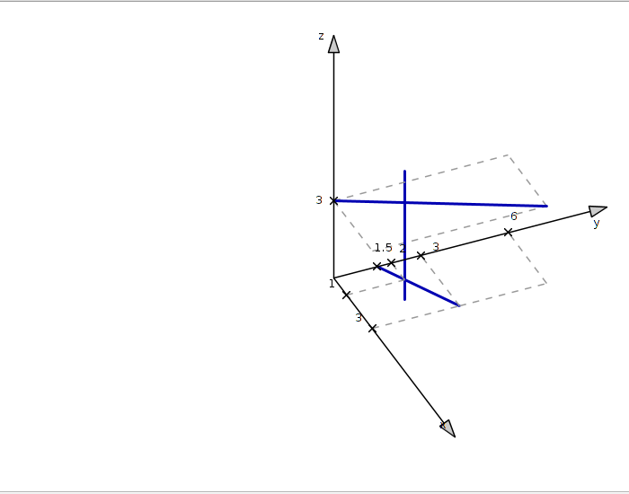

Animação do esboço de reta perpendicular a duas retas reversas
A reta
$$r_3\,:\;
\left\{\begin{array}{lll}
x&=&1\\ y&=&2,\\
z&=&3t\end{array}\right.\,\mbox{para todo $t\in\mathbb{R}$.}
$$
intercepta as retas
$$r_1\,:\;
\left\{\begin{array}{lll}
x&=&-1+2t\\ y&=&1+t,\\
z&=&0\end{array}\right.\,\mbox{para todo $t\in\mathbb{R}$}
$$
e
$$r_2:\;
x-2=\frac{y-4}{2}\;\quad\mbox{e}\quad z=3$$ e é perpendicular a
ambas.
